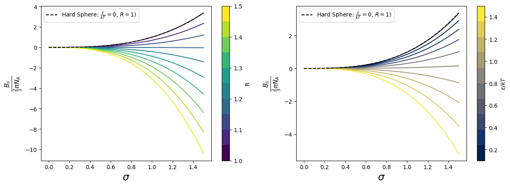

Week 3 Exercise: Second Virial Coefficient from Interatomic potentials.#
In this session we will investigate the emergence of non-idealities in the volumetri behavior of pure fluids by computing an expression of the P/v isotherm in the case of particles interacting with a square well potential, defined by the expression: \(\Gamma_{ii}=0\) for \(r>R\sigma\) ; \(-\epsilon\) for \(\sigma<r\leq{R}\sigma\) ; \(\infty\) for \(r \leq \sigma\)
This potential is a function of three parameters: \(\sigma\), \(\epsilon\), and \(R\). It is easy to see that for \(\sigma, \epsilon \rightarrow {0}\) the behavior of the gas is ideal.
The objective of this exercise is to estimate the deviation from the ideal Gas volumetric behavior at constant temperature, as a function of increasing values of \(\sigma\), \(\epsilon\), and \(R\).
In solving the problem remember that the second order virial coefficient can be computed from \(\Gamma_{ii}\) as:
where:
\(B_{ii}\) is the second order virial coefficient
\(N_A\) is the avogadro number
\(\Gamma_{ii}\) is the intermolecular potential between two molecules of specie \(i\)
\(k\) is the Boltzmann constant
\(T\) is the temperature
\(r\) is the interparticle distance
Solution Trace:#
To answer the question one needs to obtain an analytical expression for the second order Virial coefficient for the square-well potential, and then use the virial expansion of the compressibility factor (truncated at the second term), to investigate the deviation from ideality of the volumetric behavior of a fluid with these characteristics.
which leads to:
and, by introducing the constant \(b_0=\frac{2}{3}\pi{N_A}\sigma^3\):
Now one can study what happens to \(B_{ii}\) varying parameters \(\sigma\), \(R\), and \(\epsilon\):
import numpy as np
import matplotlib.pyplot as plt
import matplotlib.cm as cm
import matplotlib.colors as mcolors
import warnings
# Suppress all warnings
warnings.filterwarnings("ignore")
sigma = np.linspace(0,1.5,100)
Bii = lambda b0, R, eps_kT: b0*R**3*(1-((R**3-1)/R**3)*np.exp(eps_kT))
b0 = lambda sigma: sigma**3
# Number of lines
n_lines = 10
colormap = cm.get_cmap('viridis', n_lines)
norm = mcolors.Normalize(vmin=1.00, vmax=1.5)
colormap2 = cm.get_cmap('cividis', n_lines)
norm2 = mcolors.Normalize(vmin=0.1, vmax=1.5)
# Create a figure and axis
fig, ax = plt.subplots(1,2,figsize=(15, 5))
for R_i in np.linspace(1.00,1.5,n_lines):
ax[0].plot(sigma,Bii(b0(sigma),R_i,1.0),color=colormap(norm(R_i)));
for eps_kT_i in np.linspace(0.01,1.5,10):
ax[1].plot(sigma,Bii(b0(sigma),1.2,eps_kT_i),color=colormap2(norm2( eps_kT_i)));
ax[0].plot(sigma,Bii(b0(sigma),1,0.0),'k--',label='Hard Sphere: $\\frac{\epsilon}{kT}=0$, $R=1$)');
ax[0].legend()
ax[1].plot(sigma,Bii(b0(sigma),1,0.0),'k--',label='Hard Sphere: $\\frac{\epsilon}{kT}=0$, $R=1$)');
ax[1].legend()
fig.colorbar(cm.ScalarMappable(norm=norm, cmap=colormap), ax=ax[0],label='R');
fig.colorbar(cm.ScalarMappable(norm=norm2, cmap=colormap2), ax=ax[1],label='$\epsilon/kT$');
ax[0].set_xlabel('$\sigma$',fontsize=18);
ax[0].set_ylabel('$\\frac{B_{ii}}{\\frac{2}{3}\pi{N_A}}$',fontsize=16);
ax[1].set_xlabel('$\sigma$',fontsize=18);
ax[1].set_ylabel('$\\frac{B_{ii}}{\\frac{2}{3}\pi{N_A}}$',fontsize=16);
